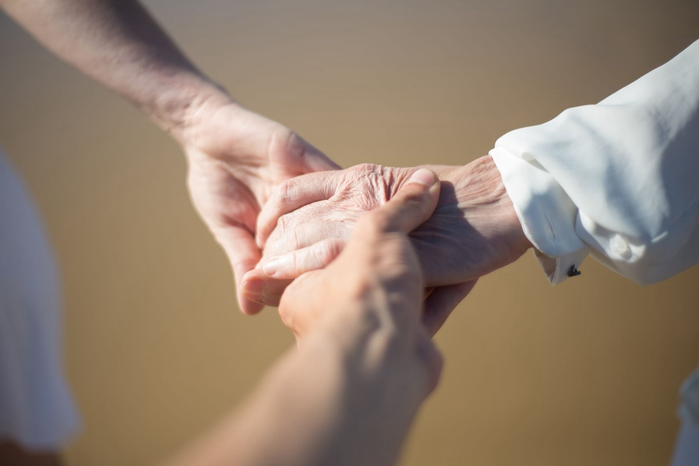

当院について
院長紹介とリーベクリニックの理念
リーベクリニックは、北海道旭川市で訪問診療（在宅医療）を中心に行うクリニックです。運営は一般社団法人 愛清会。院長の経歴と、私たちが大切にしている考え方をご紹介します。
リーベクリニックは、訪問診療を中心に、通院が困難な方のご自宅と施設へ医師が計画的に定期訪問しています。院長の山崎清裕は救急医療の現場を経て、在宅医療に取り組んでいます。
- 院長は2022年 北海道大学医学部 卒業。砂川市立病院で内科・外科・精神科・小児科・産婦人科・麻酔科・救急科を研修
- その後札幌医科大学附属病院 救急科に所属し、三次救急に従事。在籍中に勤医協中央病院・手稲渓仁会病院でも診療経験を積む
- 訪問診療を中心に、ご自宅・施設での診療とオンライン診療に取り組んでいます
- 定期訪問は月2回程度が目安。夜間・休日は電話でご相談いただけるオンコール体制です
- 運営は一般社団法人 愛清会。医療・介護・障がい福祉のグループです
院長 山崎 清裕（やまざき せいゆう）
山崎 清裕
やまざき せいゆう ／ 院長
「病院で待つ医療」から「出向く医療」へ。
皆様のかかりつけ医として、フットワーク軽く、そして温かくサポートいたします。
1994年、岩手県に生まれました。北海道大学医学部を卒業後、砂川市立病院で内科・外科・精神科・小児科・産婦人科・麻酔科・救急科を研修し、札幌医科大学附属病院 救急科では三次救急の最前線に立ってきました。同科在籍中には勤医協中央病院・手稲渓仁会病院でも診療にあたり、へき地・地域医療から基幹病院まで幅広い場面を経験してきました。
救急の現場では、運ばれてくる前の生活が見えないまま治療にあたることが少なくありません。ご自宅や施設に伺う訪問診療では、その方がどこでどのように暮らし、どなたが支えているのかを、目で見て確かめながら診療できます。病気だけでなく、生活・ご家族・施設の状況まで含めて診ることを大切にしています。
経歴
次の内容は、いずれも事実として確認できるものを年次順に記載しています。
- 1994年岩手県 生まれ
- 岩手県立盛岡第一高等学校卒業
- 2022年北海道大学医学部 卒業
- 2022年砂川市立病院で研修を開始。内科・外科・精神科・小児科・産婦人科・麻酔科・救急科を研修し、北海道北部の病院で地域医療にも携わりました
- その後札幌医科大学附属病院 救急科に所属。三次救急の最前線に従事
- 同科在籍中勤医協中央病院、手稲渓仁会病院でも診療にあたり、へき地・地域医療から基幹病院まで、救急・外傷・内科の診療経験を重ねる
- 現在リーベクリニック 院長（一般社団法人 愛清会）
※ 経歴に記載した診療科は研修・勤務の経歴であり、当院が標榜する診療科を示すものではありません。過去に在籍した医療機関名は経歴の記載であり、当院との連携関係を示すものではありません。
救急の現場から在宅医療へ
救急科では、急に具合が悪くなった方が搬送されてきます。処置を終えて容態が落ち着いたあと、その方が帰る先の暮らしがどうなっているのかまでは、なかなか見えません。「通院が難しくなっていた」「薬が飲めていなかった」「ご家族が付き添えなくなっていた」——搬送の背景に、そうした生活の変化が隠れていることがあります。
北海道では、その背景に距離と雪が重なります。冬の通院は、除雪や凍結、待ち時間を含めると半日仕事になることもあります。付き添うご家族の負担も小さくありません。通院そのものが体調を崩す引き金になってしまうこともあります。
訪問診療とは、通院が困難な方のご自宅や施設へ、医師が計画的に定期訪問して行う医療です。急変時にどう動くかを事前に決めておけること、生活の場でご本人・ご家族と話し合えることが、救急の現場との大きな違いだと感じています。
当院では、定期訪問を月2回程度を目安に行い、必要に応じて臨時の対応も行います。夜間・休日は電話でご相談いただけるオンコール体制をとっています（主治医への直通をお約束するものではありません。緊急性が高い症状は119番を優先してください）。
訪問診療の内容や対象については訪問診療とは（対象・往診との違い・診療内容）のページで詳しくご説明しています。
私たちが大切にしていること（理念）
医療が、あなたの暮らしに寄り添います。
通院の負担を減らし、日々の不安を安心へ
移動そのものが負担になっている方にとって、通院を続けることは治療の一部ではなく、生活を削る作業になってしまいます。医師が伺うことで、その時間と体力を暮らしに戻すことを目指しています。
住み慣れた場所で、最期まで自分らしく
どこで、どのように過ごしたいか。その希望は、ご本人・ご家族・施設のスタッフと繰り返し話し合う中で形になっていきます。当院では、看取りやACP（人生会議）、DNARに関するご相談も承っています。
生活と医療をつなぐ、多職種の一員として
在宅療養は医師だけで支えられるものではありません。ケアマネジャー、訪問看護、薬局、施設のスタッフ、ご家族と情報を共有し、必要な検査や治療は近隣の基幹病院・検査施設へ依頼・ご紹介します。
名前とロゴに込めた思い
クリニック名の「リーベ（Liebe）」は、ドイツ語で「愛」を意味します。運営法人である愛清会の「愛」と「清」——清らかな愛をもって、暮らしの場に医療を届けたいという思いを名前に込めました。
ロゴは「清流の心」。一筆書きのように描いたやわらかなハートの線を、澄んだ水の流れや風のような曲線で表し、先端から生まれる小さな水滴と新芽に、「活動によって何かが生まれる」願いを重ねています。クリアな水色は「清」を、やさしいピンクは「愛」を表しています。

クリニック概要（名称・所在地・電話・運営法人・診療体制）
| 運営法人 | 一般社団法人 愛清会 |
|---|---|
| 医療機関名 | リーベクリニック（Liebe Clinic） |
| 院長 | 山崎 清裕（やまざき せいゆう） |
| 所在地 | 〒070-0035 北海道旭川市5条通6丁目4-59 第一五条ビル1階 Googleマップで開く |
| 最寄駅 | JR旭川駅 |
| TEL / FAX | 0166-74-3774 / 0166-74-3240 |
| liebe@aiseikai.care | |
| 診療形態 | 訪問診療を中心に、ご自宅・施設での診療とオンライン診療を行っています |
| 対応エリア | 旭川市が中心エリア、名寄市・士別市・剣淵町・羽幌町が対応エリアです。上川管内ほか北海道内は、ご住所・病状・道路状況・診療体制をふまえて個別にご相談を承ります（対応エリアの詳細） |
| 定期訪問の目安 | 月2回程度（病状・療養場所により調整します） |
| 夜間・休日 | 電話でご相談いただけるオンコール体制をとっています。主治医への直通をお約束するものではありません。緊急時は119番を優先してください |
受付時間・駐車場については、お手数ですがお電話でご確認ください。所在地・地図はアクセス・クリニック概要のページにも掲載しています。
愛清会グループについて
リーベクリニックを運営する一般社団法人 愛清会は、医療・介護・障がい福祉の各分野で事業を行うグループの一員です。訪問診療・訪問看護に加え、住宅型・介護付有料老人ホーム、ケアハウス、認知症対応型グループホーム、児童デイ・放課後等デイサービス、就労継続支援A型・B型、生活介護、共同生活援助などを展開しています。
医療と生活の両方に関わる法人が同じグループにあることで、療養場所が変わっても支援が途切れにくくなります。詳しくは愛清会グループの医療・介護・障がい福祉の事業一覧をご覧ください。